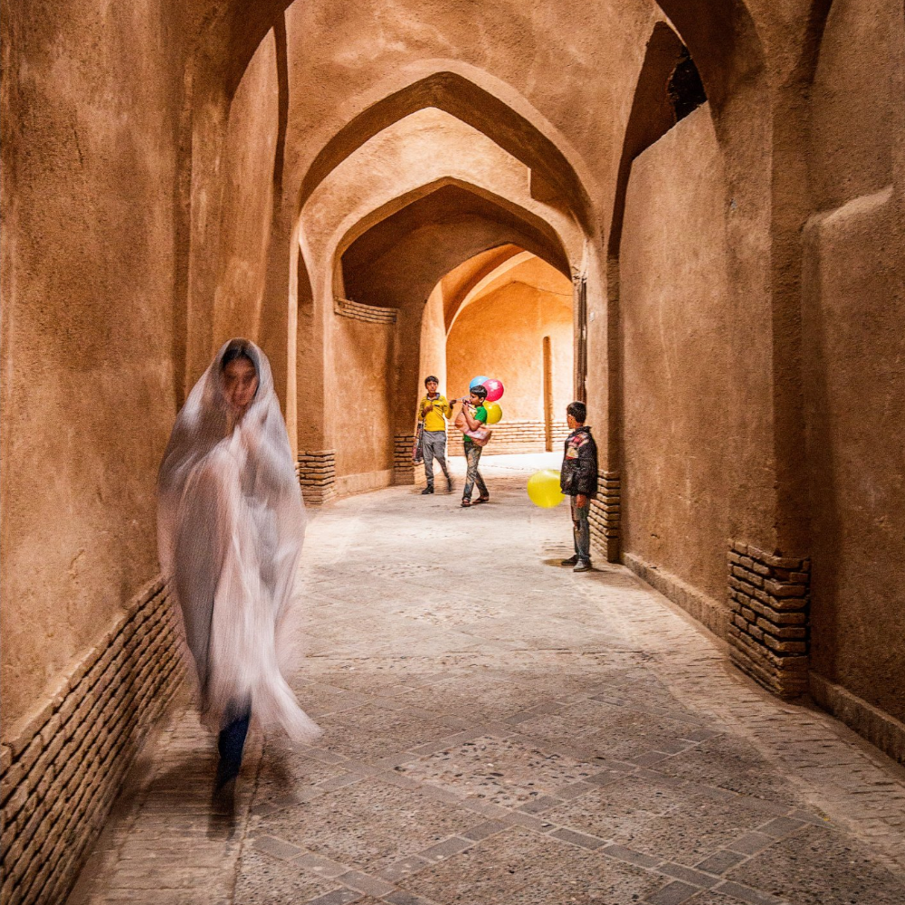

Ehsan Nikfarjam
 Ehsan Nikfarjam, born on 1985 in Nowshahr, resident of Tonekabon, has a bachelor's degree in computer science, has started photography since 2002 and professionally since 2009 with a focus on Nature, Landscape and Documentary. He has won numerous medals and awards from domestic and international festivals in the United Kingdom, the United States, Serbia, Turkey, India, France, etc.
Member of the International Photography Federation (FIAP), Member of the Iranian Photographers Association, Member of the Negah Photographers Association. Instructor of various photography courses and performing several photography workshops and judging several international photo festivals.